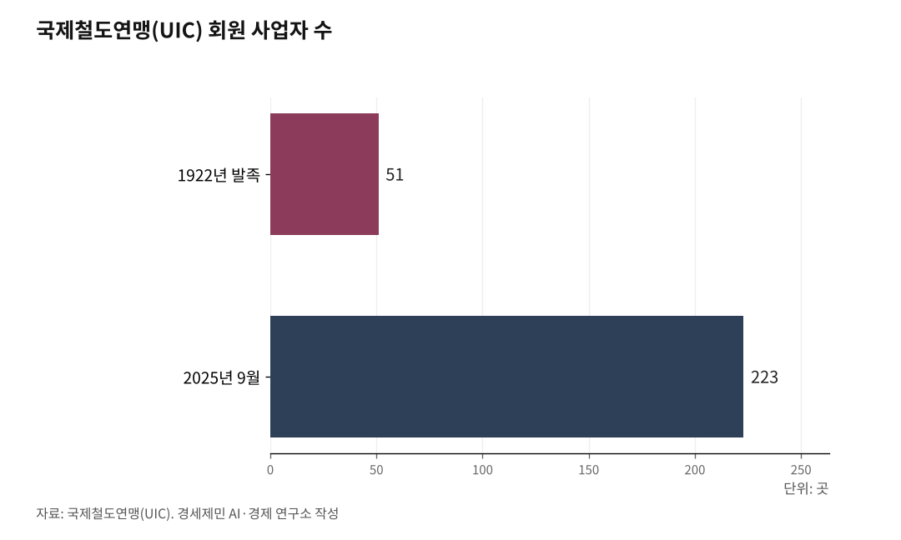

한국 대륙 철도 다섯 통로, 북한 못 지나면 무용지물
UIC·OSJD 두 통로엔 가입했다, OTIF·ERA·CIT 세 통로는 비회원이다
대륙 철도 연결에 궤도·신호·전기·통신 네 가지 물리적 호환이 필요하다
한국 LTE-R 세계 최초 상용 운영, 2026년 7월 제5차 국가철도망 계획이 분수령
한반도종단철도(TKR, Trans-Korean Railway)가 시베리아횡단철도(TSR, Trans-Siberian Railway), 중국횡단철도(TCR, Trans-China Railway)와 연결되면 한국 화물은 부산에서 모스크바를 거쳐 유럽까지 철도로 닿는다.

2026년 5월 현재 분단 상황에서 한반도종단철도는 가동하지 않는다. 한국이 가입한 국제 철도 기구가 있고, 가입하지 않은 기구도 있다.
국제 철도 기구는 다섯이다. 안전·표준·법률·운송 규범을 100여년에 걸쳐 발전시켰다. 물리적 호환은 네 가지다. 궤도·신호·전기·통신이다.
물류와 물동량은 구분한다. 물류는 화물의 흐름을 가리킨다. 물동량은 흐른 양을 가리킨다.
1. 한국이 가입한 두 통로 — UIC와 OSJD
국제철도연맹(UIC, Union internationale des chemins de fer)이 1922년 10월 17일 파리에서 발족했다. 29개국 51개 철도 사업자가 참여했다.
UIC 회원은 2025년 9월 기준 223개사다. 우크라이나 침공으로 2022년 3월 정지된 러시아·벨라루스 회원사를 포함한다.
UIC는 UIC 코드, UIC 리플릿, 국제철도표준(IRS, International Railway Solutions)으로 철도 시스템 설계·건설·운영·정비 공통 규칙을 만든다. UIC 공식 IRS 문서는 IRS가 합의로 작성돼 자발적으로 채택되며 법적 구속력은 없고 철도 부문에서 기술 정당성을 갖는다고 적시한다. UIC 공식 페이지는 고속철도를 두 기준으로 정의한다. 첫째, 항공과 경쟁하는 장거리 구간은 시속 250km 이상이다. 둘째, 항공 경쟁이 없는 중거리 구간은 시속 230km나 시속 220km, 또는 시속 200km 초과면 가능하다.
한국철도공사(코레일)가 UIC 회원이다. 코레일은 2025년 5월 16일 인도 뉴델리에서 제38차 UIC 아·태 지역 총회를 주재했다. 2026년 4월 6일부터 10일까지 서울에서 아·태 10개국 초청 연수를 시행했다.
철도협력기구(OSJD, Organization for Cooperation Between Railways)는 1956년 6월 28일 불가리아 소피아에서 발족했다. 본부는 폴란드 바르샤바에 있다.
OSJD 협약 SMGS(국제 화물 운송 협약)와 SMPS(국제 여객 운송 협약)가 회원국 간 철도 운송 기본 법률이다. 시베리아횡단철도와 중국횡단철도 등 유라시아 회랑이 OSJD 협약 체계로 움직인다.
대한민국 정책브리핑이 공개한 국토교통부 보도자료(2020.12.4.)는 한국이 2015년부터 OSJD 가입을 추진했으나 북한 반대로 무산됐다고 적시한다. 한국은 2018년 6월 키르기스스탄에서 열린 제46차 OSJD 장관회의에서 기존 회원국 만장일치로 29번째 정회원국 자격을 얻었다. 2023년 6월 13일부터 16일까지 부산 벡스코에서 제50차 OSJD 장관회의를 한국이 처음 주최했다.

2. 한국이 가입하지 않은 세 통로 — OTIF·ERA·CIT
한국은 OTIF·ERA·CIT 세 기구에 가입하지 않았다.
국제철도수송정부간기구(OTIF, Organisation intergouvernementale pour les Transports Internationaux Ferroviaires)는 1893년 설립한 국제철도운송중앙사무소를 전신으로 한다. 1980년 베른에서 체결한 국제철도수송협약(COTIF)을 근거로 1985년 5월 1일 출범했다. 본부는 스위스 베른에 있다.
2011년 EU도 가입했다. 한국은 가입하지 않았다. 한국 화물이 유럽 OTIF 회원국 영토를 통과하려면 한국이 OTIF 협약에 가입해야 한다.
유럽연합철도청(ERA, European Union Agency for Railways)은 2004년 EU 규정 881/2004로 설립돼 2005년 가동했다. 본부는 프랑스 발랑시엔에 있다. ERA는 EU 집행위 권한 위임으로 기술 상호 운용성 표준(TSI, Technical Specifications for Interoperability) 초안을 작성한다. ERA는 안전 인증도 담당한다. EU 집행위는 TSI를 채택해 EU 관보에 공포한다. 한국 KTX 기술이 유럽에 진출하는 조건은 TSI 충족이다.
국제철도수송위원회(CIT, Comité International des Transports Ferroviaires)는 1902년 4월 26일 이탈리아 밀라노에서 출범했다. 본부는 베른에 있다. CIT는 OTIF 실무 차원 기구로 운영사 간 운송 계약·서류·청구권 처리를 통일한다.
3. 궤도와 신호 — 표준궤·광궤, KTCS·ETCS·CTCS
궤도는 두 갈래로 나뉜다. 한국·중국·서유럽이 표준궤 1435mm를 쓴다. 러시아·동유럽은 광궤 1520mm를 쓴다. 시베리아횡단철도는 모스크바에서 블라디보스토크까지 9288km를 광궤로 잇는다.
두 궤간이 만나는 지점에서 대차 교환이나 환적을 한다. 레일 단면 표준은 UIC 60(60E1, 미터당 60.21kg, UIC 860·EN 13674-1)이다. 이 표준이 고속선과 중하중 화물선 국제 표준이다.
신호 체계는 유럽 ETCS(European Train Control System), 한국 KTCS(Korean Train Control System), 중국 CTCS(Chinese Train Control System) 셋이다.
한국교통연구원과 한국철도기술연구원이 함께 발간한 국가R&D 보고서(발간등록번호 11-B551201-000120-01)는 한국형 열차제어시스템 KTCS-3 국가R&D 과제 기간을 2018년 4월부터 2020년 12월까지로 적시한다. 국가철도공단은 2021년부터 유럽 공인시험기관과 국내 철도종합시험선로에서 실차 운행 시험을 진행했다. 2025년 3월 KTCS-3 성능검증을 완료했다.
KTCS-3는 이동폐색(Moving Block) 제어 기술과 열차자동운전(ATO, Automatic Train Operation) 기술을 핵심으로 한다. 기존 궤도회로를 쓰지 않는다. 한국형 철도통합무선망(LTE-R)을 기반으로 열차 위치를 검지하고 선행 열차 후단까지 안전하게 이동 제어한다.
같은 보고서는 "노선 간 상호 연계성의 확보를 위해 차상신호장치와 지상신호장치 간의 호환성 검증이 중요해지고 있다"고 적시한다.
4. 전기와 통신 — AC 25kV와 LTE-R
한국철도공사 공식 자료는 한국 간선이 교류 2만5000V(AC 25kV)를 쓰고, 도심 지하철은 직류 1500V(DC 1.5kV)를 쓴다고 적시한다.
국제전기기술위원회(IEC) 60850 표준과 유럽 표준 EN 50163이 AC 25kV를 철도 견인 시스템 공급 전압 국제 표준으로 규정한다. UIC 공식 자료는 25kV 50/60Hz 가공 전차선 설치 표준 문서를 별도 적시한다.
주파수는 두 갈래다. 한국은 60Hz를 쓰고 중국·유럽은 50Hz를 쓴다. 한반도종단철도가 중국·러시아·유럽으로 가려면 주파수 변환 설비를 두거나 다중 전압 대응 차량을 운용해야 한다.
UIC 공식 페이지는 GSM-R(Global System for Mobile Communications-Railway)이 2G+ 기반이라고 적시한다. GSM-R은 유럽 약 13만km, 전 세계 약 21만km 노선에 깔려 있다. UIC는 GSM-R 수명이 2035년 무렵 끝난다고 적시한다.
UIC는 2014년 차세대 표준 FRMCS(Future Railway Mobile Communication System) 프로젝트에 착수했다. UIC 공식 페이지는 FRMCS가 5G 기반 3GPP 통신 표준을 채택한다고 적시한다.
한국과학기술정보연구원(KoreaScience) LTE-R 기술 논문은 다음과 같이 적시한다.
"국토교통부는 2012년부터 주요 철도 정책으로 철도 전용의 통합 무선망 기술 확산에 노력했다. 그 결과, 2017년 세계 최초로 LTE 기반 철도 통합 무선망(LTE-R)을 강릉선 KTX 노선에(만종역~강릉역) 구축 완료했으며, 현재 해당 구간에서 LTE-R 통신 시스템을 상용 운영 중이다."
국토교통부는 2027년까지 1조1000억원을 투입해 LTE-R을 일반·고속 철도 전 노선에 설치하는 구축 계획을 발표했다.
한국 LTE-R은 700MHz 통합 공공망 주파수 대역을 쓴다. 한국정보통신기술협회(TTA) 정보통신용어사전과 한국철도시설공단 원주~강릉 복선전철 실시설계 보고서가 이를 적시한다.
LTE-R은 4G LTE를 철도 전용으로 적용한 한국형 통합 무선망이다. UIC가 추진하는 차세대 표준 FRMCS는 5G NR 기반을 채택한다. LTE 세대는 건너뛴다.
5. 2026년 7월 제5차 국가철도망 계획이 분수령
한국 대륙 철도가 마주할 다음 분수령은 제5차 국가철도망 구축계획(2026~2035)이다.
국토교통부 2025년 12월 12일 업무보고 자료는 제5차 국가철도망 구축계획에 반영 검토를 명시했다. 김윤덕 국토교통부 장관은 2026년 1월 13일 정부세종청사에서 국토부 산하 39개 공공기관·유관기관 업무보고를 받았다. 김 장관은 그 자리에서 제5차 계획이 2026년 7월은 돼야 발표 가능하다고 밝혔다. 당초 2025년 하반기 발표 예정이었으나 윤석열 전 대통령 탄핵과 대선 정국으로 지연됐다.
해양수산부 2025년 1월 23일 발표 자료는 2024년 부산항 컨테이너 물동량을 2440만TEU, 인천항을 356만TEU, 전국 합계를 3173만TEU로 적시한다. 부산항·인천항 합산 2796만TEU는 전국 합계의 88.1%다.
부산항과 인천항을 잇는 직결 철도가 없다. 끊긴 고리(missing link)는 세 곳이다. 시흥시청역 분기기, 안중역 직결, 인천신항 인입선 13.2km다.
전남·전북 8개 지자체가 2025년 3월 18일 국회 의원회관에서 정책포럼을 열었다. 김진희 연세대 교수가 발제했다. 발제 자료는 서해안철도를 새만금~부안~고창~영광~함평~목포 110km 구간, 총사업비 4조7919억원 규모로 정리한다. 이 구간이 제5차 국가철도망 계획에 반영되면 기존 서해선·장항선과 연계해 인천에서 목포까지 한반도 'U자형 철도망'을 완성한다.
6. 대륙 철도는 공급망 재편 사안
대륙 철도는 한국 제조업 공급망 재편 사안이다. 한국민족문화대백과사전 무산광산 항목은 무산철산을 한반도 최대 철광산으로 적시한다. 통일부 북한정보포털은 함경남도 단천 지역 마그네사이트 매장량을 60억톤 세계 3위로 적시한다.
한국민족문화대백과사전 재령광산 항목을 보면 황해도 재령군 재령읍과 삼강면에 걸친 철광산이 1907년 대한제국 궁내부 소관으로 개발됐다. 1930년 무렵 미쓰비시광업주식회사가 탐굴을 맡았다. 미쓰비시는 광석을 일본 야하타제철소로 보냈다. 해방 이후 북한은 생산된 철광석을 황해제철기업소로 보낸다.
한국 수출에서 반도체는 항공 화물이다. 산업통상자원부 수출입 통계와 국토교통부 항공정보포털시스템 자료는 2025년 11월 한 달 기준 메모리반도체 수출액을 127억7200만 달러(약 18조5400억원, 11월 평균 환율 1452원 적용)로 적시한다. 같은 달 전체 공항 수출액 269억600만 달러(약 39조500억원) 가운데 47.5%다. 철도가 잇는 화물은 반도체 완제품이 아니라 제조업 공장 원자재다.
통일부 북한정보포털은 북한과 중국의 철도 연결 지점을 신의주~단둥, 만포~지안, 남양~투먼 세 곳으로 적시한다. 북한과 러시아의 철도 연결 지점은 두만강~하산 한 곳이다.
한국교통연구원(KOTI) 동북아북한교통정보 한반도 연결교통 자료는 한반도종단철도와 대륙 철도 연결 경로를 정리한다. 시베리아횡단철도와 연결되는 대륙 철도 경유 구간은 셋이다. 만주횡단철도(TMR), 몽골횡단철도(TMGR), 중국횡단철도(TCR)다.
TMR은 다롄~선양~창춘~하얼빈~만저우리를 잇는다. 그 가운데 선양~단둥 구간과 하얼빈~투먼 구간이 북한 철도망과 만난다. TMGR은 톈진~베이징~지닝~울란바토르를 거쳐 시베리아횡단철도와 만난다. 베이징~선양~단둥 구간이 북한 철도망과 만난다. TCR은 1992년 시베리아횡단철도와 연결됐다. 롄윈강~쉬저우~정저우~시안~란저우~우루무치를 거쳐 국경에서 시베리아횡단철도와 만난다.
TCR 기점은 중국 장쑤성 롄윈강이다. 한국에서 중앙아시아로 가는 가장 짧은 경로다. 현대로템은 2024년 6월 14일 우즈베키스탄 타슈켄트 대통령궁에서 우즈베키스탄 철도청(UTY)과 시속 250km급 동력분산식 고속차량 42량(6편성) 공급·유지보수 계약을 체결했다. 계약 규모는 2700억원이다. 한국형 고속차량 사상 첫 해외 수출이다. 우즈베키스탄 정부는 2026년 5월 5일 현지시간 기준 타슈켄트~히바 1020km 구간에서 정식 영업 운행에 들어갔다.
한국은 UIC와 OSJD 두 통로에 가입했다. OTIF·ERA·CIT 세 통로에는 가입하지 않았다. 다섯 통로가 모두 열리는 데 궤도·신호·전기·통신 네 가지 물리적 호환이 필요하다.
다음 정책 일정은 2026년 7월 제5차 국가철도망 구축계획 발표다.
그러나 이 모든 게 북한 경유 없이는 불가능하다.
참고문헌
· "About UIC(국제철도연맹 소개)", 국제철도연맹(UIC), 2024.10.9., https://uic.org/about/about-uic/
· "Standardisation: the UIC role(표준화·국제철도연맹의 역할)", 국제철도연맹(UIC), 2024.1.16., https://uic.org/standardisation/
· "The definition of High Speed Rail(고속철도 정의 — 장거리 250km/h 이상, 항공 경쟁이 없는 중거리는 230km/h·220km/h 또는 200km/h 초과)", 국제철도연맹(UIC), https://uic.org/com/enews/nr/596-high-speed/article/the-definition-of-high-speed-rail
· "FRMCS(미래 철도 이동 통신 시스템)", 국제철도연맹(UIC), 2025.9.1., https://uic.org/rail-system/telecoms-signalling/frmcs
· "FRMCS(Future Railway Mobile Communication System) 공식 페이지", 국제철도연맹(UIC), https://uic.org/rail-system/telecoms-signalling/frmcs
· Song, Y.-S. et al., "Long Term Evolution for Wireless Railway Communications: Testbed Deployment and Performance Evaluation", IEEE Communications Magazine, 2016.2., https://cept.org/documents/fm-56/44917/info06_lte-for-wireless-railway-communications-korea-railroad-research-institute-
· "Building a sustainable future: the UIC-KORAIL 2026 IRaTCA training session concludes its three year roadmap(UIC-코레일 IRaTCA 2026 연수 결과 공식 발표, 2026.4.6.~10. 서울)", 국제철도연맹(UIC), https://uic.org/com/enews/article/building-a-sustainable-future-the-uic-korail-2026-iratca-training-session
· "UIC(국제철도연맹)·코레일 아·태 지역 활동 공식 페이지", 한국철도공사(KORAIL), https://info.korail.com/infoeng/contents.do?key=1255
· "[설명] 대한민국, 2021년 국제철도협력기구 장관회의 유치", 국토교통부 보도자료, 대한민국 정책브리핑, 2020.12.4., https://www.korea.kr/news/pressReleaseView.do?newsId=156425188
· "About OSJD(철도협력기구 소개)·History of OSJD foundation and development(철도협력기구 설립과 발전 연혁)", 철도협력기구(OSJD), https://en.osjd.org/en/9176
· "중국 횡단철도(TCR) 노선현황", 한국교통연구원(KOTI), https://www.koti.re.kr/user/bbs/northAsiaRsrchBoardView.do?bbs_no=49923
· "OTIF 공식 사이트", 국제철도수송정부간기구(OTIF), https://otif.org/en/
· "Vision, Mission, Values & Tasks(비전·임무·가치·과제)", 유럽연합철도청(ERA), https://www.era.europa.eu/agency-you/agency/vision-mission-values-tasks
· "CIT History(국제철도수송위원회 연혁)", 국제철도수송위원회(CIT), https://cit-rail.org/en/history/
· "Profile 60E1·UIC 60 rail(60E1·UIC 60 레일 단면 표준)", ArcelorMittal Rails, https://rails.arcelormittal.com/profiles/transport-rails/european-standards/rail-uic60-60e1/
· "자동운전을 지원하는 ETCS L3급 고속철도용 열차제어시스템 핵심기술(KTCS-3) 및 궤도회로 기능 대체기술 개발 보고서", 한국교통연구원·한국철도기술연구원, 발간등록번호 11-B551201-000120-01, https://www.codil.or.kr/filebank/original/RK/OTKCRK200796/OTKCRK200796.pdf
· "전철전력설비", 한국철도공사 공식 자료, https://info.korail.com/info/contents.do?key=900
· "IEC 60850:2014 Railway applications - Supply voltages of traction systems(IEC 60850 철도 견인 시스템 공급 전압 국제 표준)", 국제전기기술위원회(IEC), 2014.
· "EN 50163:2004+A1:2007 Railway applications - Supply voltages of traction systems(EN 50163 유럽 철도 견인 시스템 공급 전압 표준)", 유럽표준화위원회(CEN), 2004·2007.
· "Installation of 25 kV and 50 or 60 Hz overhead contact lines(25kV·50/60Hz 가공 전차선 설치 표준)", 국제철도연맹(UIC) 공식 출판물 페이지, https://shop.uic.org/en/58-60-general-regulations-concerning-electric-traction-lines
· "제4차 국가철도망 구축계획 - 검토노선·후보노선(인천신항 인입선, 시흥시청역 분기기, 안중역 직결)", 국가철도공단, https://www.kr.or.kr/sub/info.do?m=05010101
· "제2차 인천광역시 도시철도망 구축계획 요약보고서(2024.12. 인천신항 인입선 등 인천 우선 추진 노선)", 인천광역시, https://www.incheon.go.kr/traffic/TR060002/3064016
· "철도 — 북한이해 — 북한정보포털(북한·중국·러시아 철도 연결 현황)", 통일부 북한정보포털, https://nkinfo.unikorea.go.kr/nkp/pge/view.do?menuId=MENU_39
· "철도통합무선망(LTE-R) 시스템의 기술 동향과 발전 방향", 한국과학기술정보연구원 KoreaScience, https://koreascience.kr/article/JAKO202028959353752.pub?lang=ko
· "철도통합무선망(LTE-R)" 항목, 한국정보통신기술협회(TTA) 정보통신용어사전, http://terms.tta.or.kr/dictionary/dictionaryView.do?word_seq=172042-3
· "LTE-R(철도무선통신망) 실용화 및 국가철도통신망 구축 계획", 한국과학기술정보연구원 ScienceON, https://scienceon.kisti.re.kr/srch/selectPORSrchArticle.do?cn=JAKO201608949924784
· "2027년까지 LTE급 철도통신시스템 전 노선 구축", 국토교통부 공식 정책 브리핑, 대한민국 정책브리핑, https://www.korea.kr/briefing/policyBriefingView.do?newsId=148846783
· "2024년, 국내 항만 역대 최대 컨테이너 물동량 3,173만TEU 처리", 해양수산부 항만물류기획과, 2025.1.23., https://www.mof.go.kr/doc/ko/selectDoc.do?docSeq=60146
· "2025년 연간 및 12월 수출입 동향(반도체 수출 1,734억 달러, 역대 최대 실적)", 산업통상자원부 무역투자실 수출입과 보도자료, 2026.1.1., 대한민국 정책브리핑, https://eiec.kdi.re.kr/policy/materialView.do?num=275598
· "항공정보포털시스템(국제·국내 항공 화물 통계)", 국토교통부, https://www.airportal.go.kr/
· "2026년도 국토교통부 업무계획·서면자료(2025.12.12. 업무보고)", 국토교통부, https://www.molit.go.kr/2026plan/251212(자료)_국토교통부_업무보고_서면자료.pdf
· "2026년 국토교통부 소관 공공기관·유관기관 업무보고(2026.1.13. 김윤덕 장관 주재, 산하 39개 기관 참석)", 국토교통부 공식 발표
· "전남·전북 8개 지자체 정책포럼(2025.3.18. 국회 의원회관)", 김진희 연세대 교수 발제 자료 「서해안철도(새만금~목포) 110km, 사업비 4조 7919억 원, 제5차 국가철도망 구축계획 반영 촉구」, 이호 한국교통연구원 본부장 발표 「서해안철도 개통 시 군산~목포 79분 단축, 인천~목포 최단 거리 연결」
· "서해안철도(새만금~목포) 건설 5개 시·군 공동건의문 및 주민 10만 명 서명부(2025.11.5. 김윤덕 국토교통부 장관 면담)", 전남 영광군·함평군·전북 군산시·부안군·고창군 공동 발표
· 통일부 북한정보포털, "북한 광물자원" 항목 — 단천 지역 마그네사이트 매장량 60억 톤 세계 3위, 황해제철연합기업소(황해북도 송림시) 등 4대 철강기업소 위치, https://nkinfo.unikorea.go.kr/
· "북한 광물자원 개발을 위한 남북 협력 방안 연구", 통일연구원·한국지질자원연구원, https://repo.kinu.or.kr/bitstream/2015.oak/859/1/0000675670.pdf
· "재령광산", 한국민족문화대백과사전, https://encykorea.aks.ac.kr/Article/E0048976
· "무산광산", 한국민족문화대백과사전, https://encykorea.aks.ac.kr/Article/E0019067
· "현대로템, 우즈벡에 K-고속철 사상 첫 수출(2024.6.17. 보도자료, 우즈베키스탄 철도청 UTY과 2700억 원 규모 시속 250km급 동력분산식 고속차량 42량(6편성) 공급·유지보수 계약 체결)", 현대로템 공식 보도자료, https://www.hyundai-rotem.co.kr/ko/company/press/details.do?seq=2206
· "중국 횡단철도(TCR) 노선현황·한반도 연결교통(시베리아횡단철도와 만주횡단철도·몽골횡단철도·중국횡단철도 연결 경로, 북한 철도망 연결 구간)", 한국교통연구원(KOTI) 동북아북한교통정보, 출처: 안병민 외 『대륙횡단철도 운영현황 조사연구』, 한국교통연구원·한국철도기술연구원, 2004., https://www.koti.re.kr/user/bbs/northAsiaRsrchBoardView.do?bbs_no=49923
※ 이 기사는 AI 프로그램 클로드 4.1을 활용해 작성했습니다.
#한국대륙철도 #국제철도연맹UIC #철도협력기구OSJD #국제철도수송정부간기구OTIF #유럽연합철도청ERA #국제철도수송위원회CIT #한반도종단철도TKR #시베리아횡단철도TSR #중국횡단철도TCR #표준궤광궤 #KTCS3 #LTE_R #FRMCS #제5차국가철도망구축계획 #서해안철도 #북한경유 #missinglink